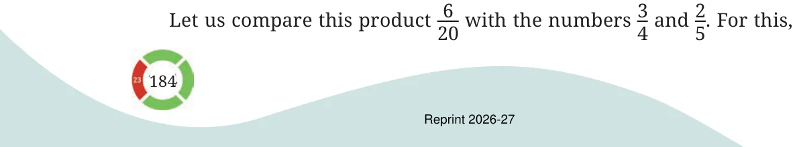
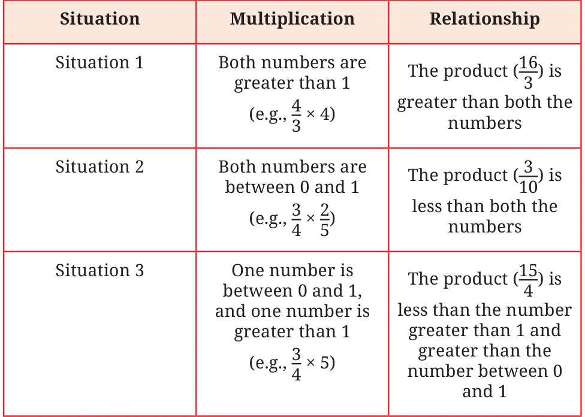

Since, we know that when a number is multiplied by 1, the product remains unchanged, we will look at multiplying pairs of numbers where neither of them is 1. When we multiply two counting numbers greater than 1, say 3 and 5, the product is greater than both the numbers being multiplied.
\(3 \times 5 = 15\)
The product, 15, is more than both 3 and 5. But what happens when we multiply \(\frac{1}{4}\) and 8?
\(\frac{1}{4} \times 8 = 2\)
In the above multiplication the product, 2, is greater than \(\frac{1}{4}\) , but less than 8. What happens when we multiply \(\frac{3}{4}\) and 25 ?
\(\frac{3}{4} \times 2 = 6\)

let us express \(\frac{3}{4}\) as 1520 and 25 as 820. From this we can see that the product is less than both the numbers. When do you think the product is greater than both the numbers multiplied, when is it in between the two numbers, and when is it smaller than both? [Hint: The relationship between the product and the numbers multiplied depends on whether they are between 0 and 1 or they are greater than 1. Take different pairs of numbers and observe their product. For each multiplication, consider the following questions.]

Create more such examples for each situation and observe the relationship between the product and the numbers being multiplied. What can you conclude about the relationship between the numbers multiplied and the product? Fill in the blanks:
- •When one of the numbers being multiplied is between 0 and 1,
the product is ____________ (greater/less) than the other number.
- •When one of the numbers being multiplied is greater than 1, the
product is _____________ (greater/less) than the other number.